Blog
-

NBA Power Rankings December 3, 2021
By Zach Hales, CouchGMCouchGM’s weekly NBA power rankings.
Read More -

NFL Power Rankings November 30, 2021
By Terry Hales, Assistant CouchGMCouchGM’s weekly NFL power rankings.
Read More -
NBA Power Rankings November 26, 2021
By Terry Hales, Assistant CouchGMCouchGM’s weekly NBA power rankings.
Read More -
NFL Power Rankings November 23, 2021
By Andrew Hales, Assistant CouchGMCouchGM’s weekly NFL power rankings.
Read More -
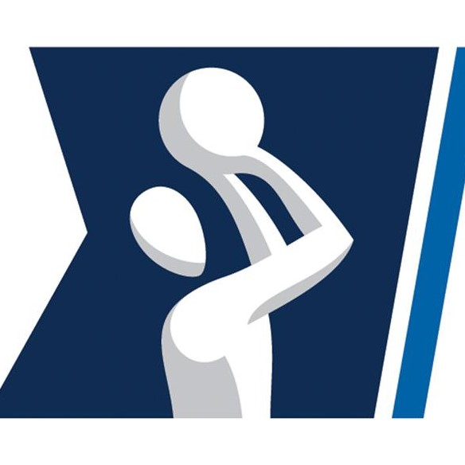
NCAA Men's Basketball Top-25
By Zach Hales, CouchGMCouchGM's NCAA Men's Basketball Top-25 is now presented in this live table.
Read More -
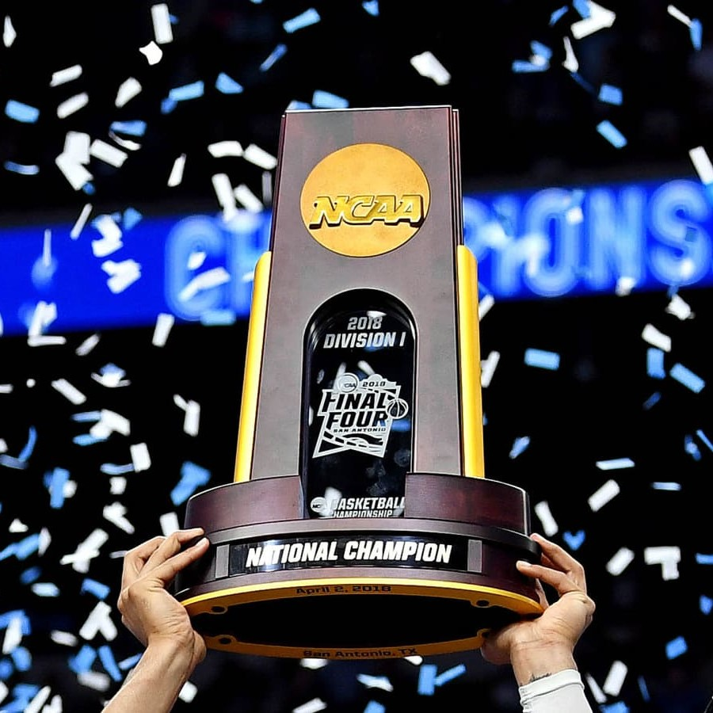
NCAA Men's Basketball Championship Predictor
By Zach Hales, CouchGMCouchGM's NCAA Men's Basketball Championship Predictor is now presented in this live table.
Read More -
NBA Power Rankings November 19, 2021
By Andrew Hales, Assistant CouchGMCouchGM’s weekly NBA power rankings.
Read More -
NFL Power Rankings November 16, 2021
By Zach Hales, CouchGMCouchGM’s weekly NFL power rankings.
Read More -
NBA Power Rankings November 14, 2021
By Zach Hales, CouchGMCouchGM’s weekly NBA power rankings.
Read More -
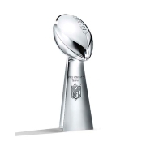
Super Bowl Predictor
By Zach Hales, CouchGMCouchGM's Super Bowl Predictor is now presented in this live table.
Read More -
2021-2022 NBA Season Preview
By CouchGM Staff on October 19, 2021CouchGM's prediction model for the 2021-2022 NBA season is revealed along with a season preview by the CouchGM staff.
Read More -
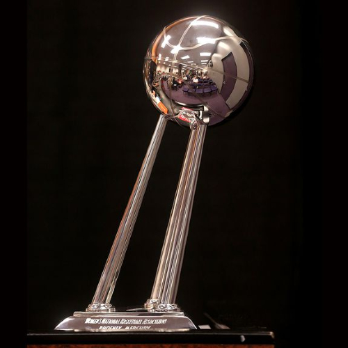
WNBA Championship Predictor
By Zach Hales, CouchGMCouchGM's WNBA Championship Predictor is now presented in this live table.
Read More -
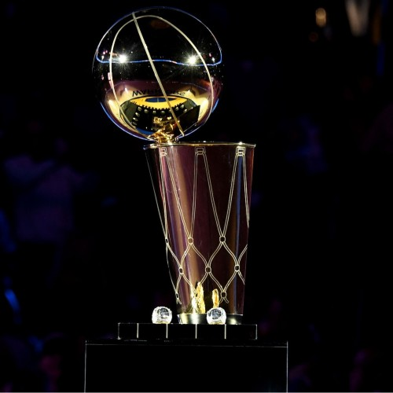
NBA Championship Predictor
By Zach Hales, CouchGMCouchGM's NBA Championship Predictor is now presented in this live table.
Read More -
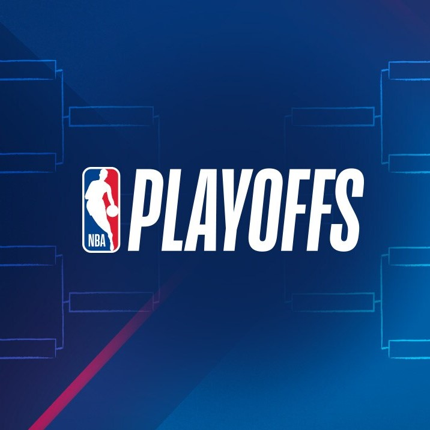
New NBA Championship Prediction Model and NBA 2021 Playoffs Preview
By Zach Hales, CouchGM on May 18, 2021CouchGM’s NBA Championship prediction model has been updated ahead of the playoffs.
Read More -
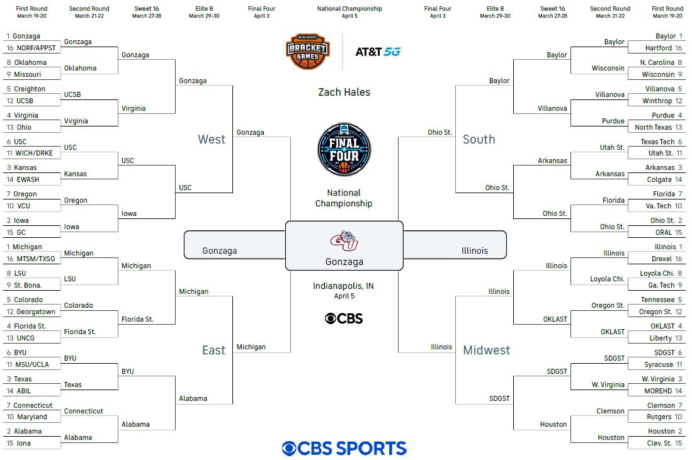
2021 NCAA Tournament Brackets
By the CouchGM Team: Andrew, Terry, and Zach on March 18, 2021The CouchGM team makes their NCAA tournament picks!
Read More -

NBA 2021 Mid-Season Review
By Zach Hales, CouchGM on March 9, 2021With the NBA Season at the halfway point, let’s look at which teams are true championship contenders.
Read More -
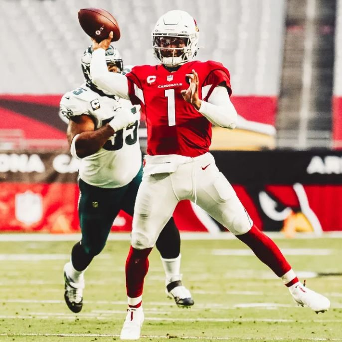
Can Kyler Murray win a Superbowl?
By Zach Hales, CouchGM on February 2, 2021What kind of QB does it take to win a Superbowl? Can Kyler Murray become that QB? Let's look at the last 10 Superbowl winners to find out.
Read More -
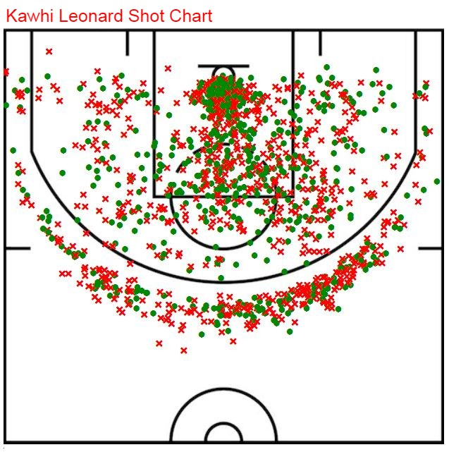
Evolution of NBA Scoring
By Zach Hales, CouchGM on November 11, 2020Threes are becoming more and more common, but the mid-range isn't dead yet!
Read More -
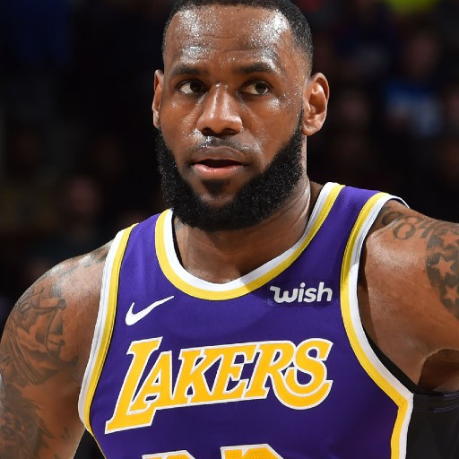
The GOAT Debate
By Zach Hales, CouchGM on October 16, 2020After LeBron’s 4th NBA championship, has he overtaken Jordan as the GOAT?
Read More -

What Comes Next? Houston Rockets and Mike D'Antoni
By Zach Hales, CouchGM on September 24, 2020This new series examines teams, players, or coaches that have interesting decisions to make. This time: the Houston Rockets and Mike D'Antoni
Read More -
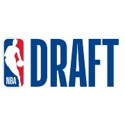
NBA Draft 101 - Player Overview
By Zach Hales, CouchGM on September 17, 2020Now that NBA Draft 101 has been taught, take a look at some of the top players in the draft class and see who stands out.
Read More -
NBA Draft 101
By Zach Hales, CouchGM on September 11, 2020In this new Intro to the NBA Draft series, CouchGM teaches NBA Draft 101 on the basics of team-building through the NBA Draft and which skills to prioritze when evaluating prospective NBA players.
Read More -
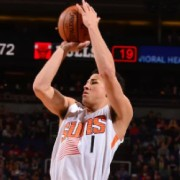
Can Devin Booker be the best player on a championship team?
By Zach Hales, CouchGM on September 4, 2020What does it take to be the best player on an NBA championship-level team? Does Devin Booker have what it takes? Take a look at past NBA Finals teams and see what their best players have in common.
Read More -
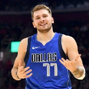
What if the Phoenix Suns had drafted Luka Doncic?
By Zach Hales, CouchGM on August 26, 2020With the first pick in the 2018 NBA Draft, the Phoenix Suns select... Luka Doncic! If that had really happened, what would the team look like today? Step inside the time machine and rewrite history, then come back and see what the present and future hold.
Read More